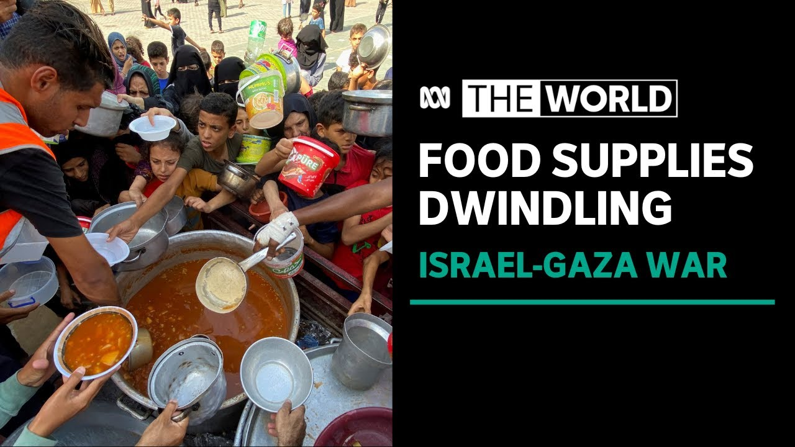

During the first quarter of 2025, our campaign “Helping People in War” provided essential food and clean drinking water to civilians affected by ongoing conflict. Through the generosity of our donors, we were able to raise ₹50,000. Out of this, ₹48,000 was spent directly on food supplies, drinking water, and distribution logistics, while ₹2,000 remains reserved for urgent future needs.
Of the total funds raised, ₹15,000 (31%) was allocated to staple food items such as rice, wheat, and bread, ensuring that families in shelters had consistent daily meals. A further ₹10,000 (21%) was used to supply clean drinking water through both bottled deliveries and tanker services to areas where water sources had been destroyed or contaminated. To improve the nutritional value of meals, ₹8,000 (17%) was dedicated to purchasing vegetables and pulses. Cooking fuel, a necessity for preparing warm, safe meals, accounted for ₹5,000 (10%) of our spending. The safe delivery of these supplies into conflict-affected areas required ₹7,000 (15%) in transportation and logistics. Finally, ₹3,000 (6%) was kept aside as emergency reserves, enabling us to respond quickly to sudden shortages or urgent requests from the field.

Total individuals assisted: 1,200
Among those helped was a group of families who had been without access to clean drinking water for over a week due to blocked supply routes. With donor support, we delivered fresh water and food within 48 hours, preventing severe dehydration and malnutrition.
As the conflict continues, our priority is to expand our distribution network to reach an additional 800 people over the next quarter. We aim to raise ₹20,000 more to cover the costs of staple foods, safe drinking water, and transport into high-risk zones.